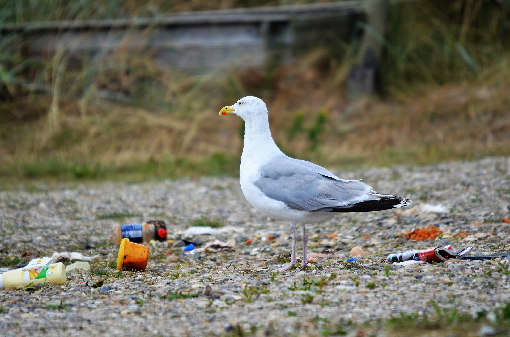

Велика поверхня Землі покрита водою, яка в цілому складає Світовий океан. На суші є джерела прісної води - озера. Річки є життєвими артеріями багатьох міст і країн. Моря годують велику кількість людей. Все це говорить про те, що життя на планеті без води бути не може. Однак людина зневажливо ставиться до головного ресурсу природи, що призвело до величезного забруднення гідросфери. Стан багатьох річок і озер світу є критичним. Якщо не зупинити забруднення водойм, то багато аквасистеми перестануть функціонувати - самоочищатися і давати життя рибам та іншим мешканцям.
Важливо контролювати процес скидання вод і взаємодії промислових підприємств з водоймами. Необхідно кожній людині економити водні ресурси, оскільки надмірна витрата води сприяє використанню її більшої кількості, а, значить, забрудняться водойми будуть інтенсивніше. Охорона річок і озер, контроль використання ресурсів - це необхідний захід для того, щоб зберегти на планеті запаси чистої питної води, необхідної для життя всім без винятку.
